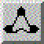

|  |
Head tracking:
If a Logitech Head Tracking Device with CrystalEyes shutter glasses is connected to a serial port, the visualized data can be investigated by moving your head.
By turning the head, objects can be seen from a different angle.By moving the head forward or backward, objects can be seen clother or farther. Thus, it is possible to see an object from different sides or 'fly' thru the data set. In conjunction with stereo viewing a much more immersive impression is provided which can be helpful in many 3D visualization cases.
The serial port can be adjusted in Preferences... (see PreferenceSheet).
It is also possible to use a Polhemus Fastrak tracking device for position and orientation detection.